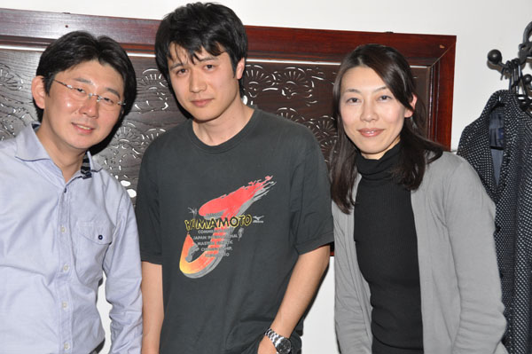

デジカメ
（今日の一枚）

プチプチ同窓会（2010.2.27）
ソーシャルネットワークを通じて奇跡的に再会した小学校時代の同級生です。
博多で開催したプチプチ同窓会、27年ぶりの再会でした。
何だかとても不思議なノスタルジックな気分に浸る事が出来ました。
| Title | 掲載日 撮影日 |
Data | 一 言 |
| プチプチ同窓会 | 2010.2.27 | − | ソー
シャルネットワークを通じて奇跡的に再会した小学校時代の同級生です。 博多で開催したプチプチ同窓会、27年ぶりの再会でした。 何だかとても不思議なノスタルジックな気分に浸る事が出来ました。 |
| 部分日食 （食分約0.93） 部分日食ダイジェスト |
2009.7.22 10:54:38 |
D90 NIKKOR 70-300mm 1:4.5-5.6 1/500(F11)ISO200 ND400*ND8 RAW(M)AF |
熊
本での撮影です。曇り空で、良好なコンディションではありませんでした。 ND400、ND8、ND4のフィルター3枚重ねで望んだのですが、最大食に近づいてから急に露出が難しくなりました。 最終的に最大食は、ND400*ND8で撮影しました。 最大食になってから、急に蚊が増えたのには閉口しました。 |
| 第4回化学科同窓会1 第4回化学科同窓会2 第4回化学科同窓会3 |
2008.9.13 | − | 青
春の想い出のだんだん茶屋で行いました。6年振りの開催です。卒業して13年（修了して11年）になりますが、半分弱の同窓生が集まりました。子供さんも
沢山参加してくれました。 ノスタルジックな気分にどっぷりと浸かれた時間でした。また、いつか、必ず化学科同窓会でお会いしましょう！ |
| 南九州会1 南九州会2 南九州会3 |
2008.3.22 | − | 大
学友人との南九州会です。今回は宮崎での開催です。写真は鬼の洗濯板と青島神社です。 ところで往路、鹿児島の友人を拾って、宮崎自動車道の追い越し車線を120km/hくらいで宮崎IC方面に走っていました。もうすぐ都城ICという所で、 前から白い軽トラが・・・・・。不思議なことに、見えるのはテールランプではなく、ヘッドライト!?。混乱しましたが、とにかくあわてて、走行車線に車線 変更しました。直後、おばあちゃんの運転した軽トラが、追い越し車線を平然とえびのJCT方面に走り去っていきました。 つまり、これがあの有名な高速道路逆走だったのです。 助手席の友人に、すぐに110番してもらいました。およそ、10分後、機動隊から電話があり、無事に保護したとのこと・・・・。危うく大事故になるところ だったと、お礼を言われました。 私達の場合、運が良いことに、昼間の見通しの良い直線で、走行車線に車が居ませんでした。ですので、何とか避けることが出来ました。しかし、もし、夜間の カーブだったら・・・・。雨だったら・・・・。走行車線が車で埋まっていたら・・・。トンネルだったら・・・・。 本当に洒落になりません・・・・。 復路は、トラウマになってしまい、絶えず逆走車がいないか気にしてしまい、全くリラックスして運転出来ませんでした・・・。 宮崎恐るべしと言うか・・・どげんかせんといかん!って、感じです。 |
| 大
学友人披露宴1 大学友人披露宴2 大学友人披露宴3 |
2007.5.19 | − | 大学友人の披露宴です。大学の友人連中が鹿児島に集合しました。金曜日に集合し、式の日の土曜日から翌日の日曜日まで宿 泊したのですが、とにかく、新郎の付き合いが良過ぎて、金土日とずっと新郎と一緒に居た感じです。新郎新婦は誰もが認める薩摩隼人と薩摩おごじょで、とっ てもお似合いでした。お幸せに〜〜！ |
| 南九州会1 南九州会2 |
2006.4.8 | − | 恒例となった大学友人との南九州会です。今回は八代での開催です。 この歳になっても大学の友人と集まれるのは幸せなことです。 |
| 会 社友人披露宴 | 2005.9.17 | − | 会社の友人の披露宴です。東京赤坂で行われました。奥様はモデルみたいでした。お幸せに！！ |
| 大
学友人結婚式1 大学友人結婚式2 |
2005.6.25 | − | 大 学友人の結婚式です。大学の友人連中が八代に集合しました。殆ど同窓会状態です。アットホームで楽しい結婚式でした。それにしても、結婚式中、どの出席者 よりも一番新郎が飲んでいたのが印象的でした。お幸せに！ |
| 大学友人結婚式 | 2005.5.21 | 1/125(F5.6)ISO100 2560(FINE)AF |
大学の友人の結婚式です。大学の友人連中が千葉に集合しました。やっぱ、結婚式は良いですね。心が洗われます。そして、初 心に返れるような気がします。お幸せに！ |
| TOYOTA 2000GTとの遭遇 2000GT&SXE10 2000GT&Salvia 2000GT×2&SXE10 3M |
2004.11.27 | − | 壇ノ浦PAで生産
台数がたったの337台しかない幻の名車TOYOTA
2000GTに遭遇しました！一目散に隣に駐車しちゃいました。オーナーさんがいい方で、なんとコックピットに座らせて頂きました！もう、感激です！ 暫くするとお仲間のもう一台が到着。2/337
が壇ノ浦PAに！もの凄いことです。しかも、両車共に前期型です。名機3Mも見せて頂きました。3S-GEと同じくYAMAHA製です。2L直6DOHCで
150psを発揮します！ 今日は何気なく高速道路を長距離ドライブして いたのですが、行き掛けから何かが違っていました。下関JCTの手前で、白色なのにドアミラーがカラードでないゆっくり走るクラウンを発見しました。これ は、覆面パトではないかと疑って、ゆっくりと追い抜きざまに2人組の青色制服を確認し、確信しました。追い抜き後はセオリー通り制限時速80km/hの 10km/hオーバー未満で、ゆっくりと引き離しにかかったのですが、離れると近づいてきます。それから15分程度、近づかれたり、引き離したりを繰り返 していると、突然赤色灯が・・・・・・・。「え？」と思って急減速すると、横に付けられ付いてこいとの指示。絶対にスピードオーバーはしていないのにと憤 慨しつつも指示に従って路側帯に停車。警官曰く、気が付かれたのはすぐに分かったが、減速加速を繰り返すのでからかっているのかと考え停車を指示したとの こと。びっくりしましたが、助かりました。ゴールド免許も無事です。 これは滅多にないことだと考え、宮島SAで年末ジャンボを買ってみました。その帰りが、2台 もの2000GTとの遭遇です。既に当たった様なものですね？ |
| 慰
安旅行（集合） 慰安旅行（JR熊本駅） 慰安旅行（到着） 慰安旅行（宴会） 慰安旅行（旅館） 慰安旅行（由布岳） 慰安旅行（JR由布院駅） |
2003.10.17 2003.10.17 2003.10.17 2003.10.17 2003.10.18 2003.10.18 2003.10.18 |
− | 「修学旅行風 列車で行く湯布院ノスタルジック想ひ出づくりの旅」 同期で企画した会社の慰 安旅行です。お揃いのTシャツを作って、ゆふいんの森号で由布院に行って来ました。 宴会の写真は、旅館専属のプロカメラマン撮影です。 |
| Welcome board | 2003.4.22 2003.3.2 |
1/45(F5.6)ISO100 2560(FINE)AF |
完
成直後のwelcome
boardです。見ての通り、九州から北海道へのドライブ新婚旅行をテーマにしています。また、春という季節感を大事にしています。 S14は、きちんとnavan仕様のaeroを身にまとい、マフラーも一本モノに改造しています。 また、分かり難いですが、カレンダーも付いており、入籍日と挙式日には印も付いています。作るのには、意外と手間とお金がかかりましたが、自信作の割には 反響は小さかったです・・・・。（哀） |
| 大学友人結婚式 | 2003.1.26 2003.1.25 |
1/250(F8.0)ISO100 2560(FINE)A Trimming |
大
学の友人の結婚式です。横浜の山下公園近くで、執り行われました。新郎が新婦にメロメロなのがよく伝わりました。(*^_^*) 私も再来月結婚式だという事で、新郎からブーケをプレゼントされるなんて粋なイベントも隠されており泣かされてしまいました。 因みに、本日1/26は新郎の誕生日です。お幸せに！ それにしても、ブーケをプレゼントされた時の私は、満面の笑みです。撮影は友人のインスタントカメラです。 |
| PC | 2002.12.21 2002.12.21 |
1/30(F5.6)ISO100 2560(FINE)A |
友
人がTorontoから、わざわざ遊びに来てくれました。新居初のVisitorです。写真は武蔵塚駅です。これから、trendyな駅になる事を教えて
あげました。 彼はこれから博多で友人と遊び、京都に行き、奈良に行き、帰国するそうです。楽しそうですね？ |
| 111,111km | 2002.9.18 2002.9.18 |
1/10(F3.5)ISO200 2560(FINE)M |
愛 車のシルビアの走行メーター及び時計がパーフェクトなゾロ目となりました。S14だけに1（Single）が14個です。因みに私の誕生日も1月1日で す。更に、血液型はA型、干支は鼠、イニシャルはAです。これだけ1が揃うのも凄い事だと思いませんか？ |
| 北 欧の夏 | 2002.9.16 2002.9.1 |
1/1000(F5.6)ISO100 2560(FINE)A |
出 張で行ったストックホルム（スウェーデン）の風景です観光名所でもない名も無き風景ですが、非常に絵になります。何処を撮っても絵葉書のような美しい街で した。 |
| 第3回化学科同窓会 | 2002.8.11 2002.8.10 |
1/45(F6.7)ISO100 2560(FINE)AF |
青
春の想い出の居酒屋で行いました。 北は千葉や神奈川から鈍行列車を使って、南は鹿児島県徳之島からフェリーとバイクを使って、中には会社が終わってから愛媛を出発した強者を含め、全同期の 半分強もの仲間が集まりました。皆、それぞれの場所で頑張っている様でした。沈みっぱなしの日本ですが、お互いに今後の人生を頑張りましょう！！ |
過去の記録
2002年6月 2002
年5月 2002年4月 2002年3月 2002
年2月 2002年1月
2001年12月 2001
年11月 2001年10月 2001
年9月 2001年8月 2001
年7月